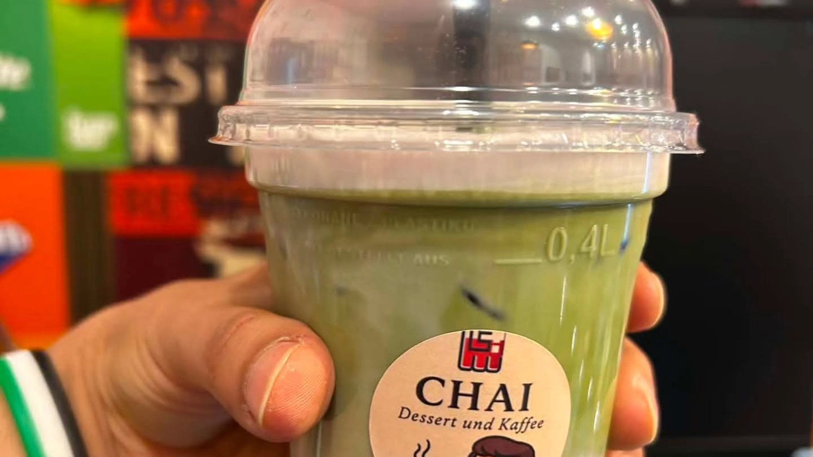
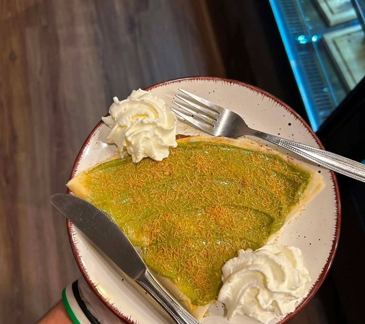
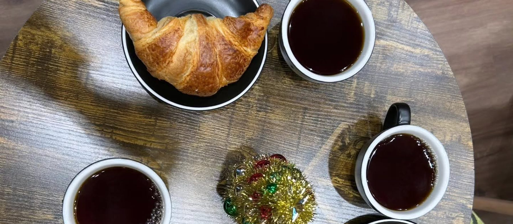

Sei anders. Sei besonders. Sei CHAI.
Kaffee, Matcha, Ube und frische Crêpes. Im Erdgeschoss der Schlosshöfe Oldenburg, jeden Tag frisch zubereitet.
4,9 von 5 bei 143 Google-Bewertungen
Unsere Signature-Linie
Ube. Als erstes Café in Deutschland.
Eine violette Süßkartoffel von den Philippinen: cremig, leicht nussig, natürlich süß, mit feinen Noten von Vanille und weißer Schokolade. Bei uns in zehn Varianten, heiß und kalt.
Alle Ube-Varianten

Kostenlos für Menschen in Not
„Hier können Sie einen Tee oder Kaffee für jemanden spenden, der es sich gerade nicht leisten kann.“
Wer möchte, zahlt bei uns einen Kaffee mehr. Wer ihn gerade braucht, bekommt ihn kostenlos. Ohne Fragen, ohne Formular.
Karte und Standort

52 Positionen auf der Karte
Ube, Matcha, Kaffee, Frucht-Mix, Dirty Soda, Crêpes, Croffles und türkische Süßigkeiten. Mit allen Preisen.
Ganze Karte ansehen
Schlosshöfe, Erdgeschoss
Schloßplatz 3, 26122 Oldenburg. Montag bis Samstag von 09:00 bis 19:00 Uhr, sonntags geschlossen.
In Google Maps öffnen